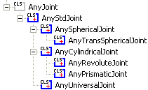

Lesson 2: Joints¶
Caution
Old tutorial: This tutorial has not yet been updated to ver. 7 of the AnyBody Modeling System. Some concepts may have changed.
You normally think of a joint as something that provides the body with its movement capability. We interpret joints that way because we would not be able to move if our joints were rigid. But there is also an opposite perception of a joint: as a constraint. If we did not have joints, then our bodies would disconnect into a heap of bones.
The latter perception is how joints really work in AnyBody. Imagine you have two segments with no joints at all. They each have 6 degrees of freedom in space: 3 translations and 3 rotations. So two disjoint segments give us 12 degrees of freedom. If we connect them by a ball and socket joint, then we eliminate 3 degrees of freedom because they can no longer translate freely with respect to each other, and we are left with a mechanism with 12 - 3 = 9 degrees of freedom. AnyBody will keep rack of all this for you, but it makes things much easier to understand if you get used to thinking of joints as constraints.
As a final word about perceiving joints as constraints, it might be worth mentioning that these constraints are not taken into account at the moment when you load a model into AnyBody. By that time, the segments are simply positioned in space where you located them in their definition. In principle, the segments may be in one big, disorganized heap.
The joint constraints are not imposed until you perform some sort of analysis. Each study has the SetInitialConditions operation for the particular purpose of resolving the constraints and connecting things. The mathematics of that is a nonlinear system of equations. Such a system may have multiple solutions or no solutions at all. Even if it has a unique solution, it may de impossible to find. This means that if the segments are too disorganized from their final positions when they are defined, then the system might not be able to resolve the constraints and put them in their correct positions. The remedy is to define the segments so that their initial positions are not too far away from the configuration they will have when the constraints are resolved. You can read much more about this subject in the tutorial A study of Studies.
AnyBody provides you with a variety of ways you can connect segments by joints. The class tree reveals the following joint class structure:

The different types are described in detail in the AnyScript Reference manual (Find it in AnyBody->Help). For examples on how to use joints, please download and study the following two examples:
See also
Next lesson: Lesson 3: Drivers.